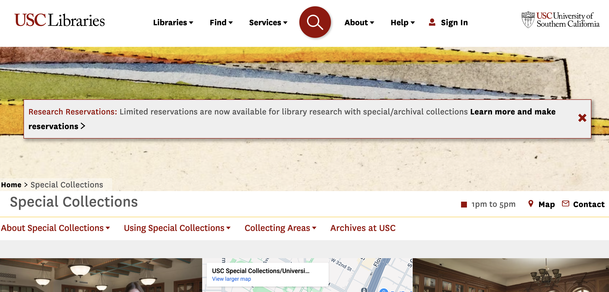
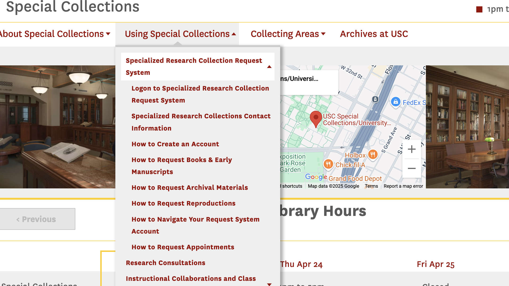
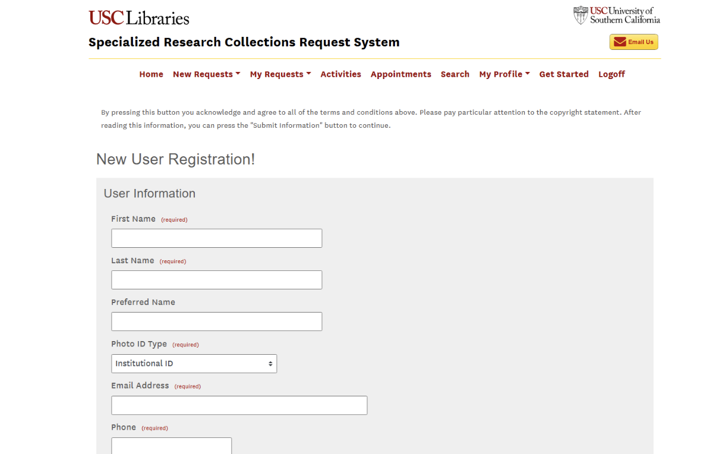

This analysis is the final project for Introduction to Information Systems in Libraries and Information Centers. Our team has decided to explore the University of Southern California Libraries with a focus on their Special Collections site. We decided that USC libraries would be an appropriate subject for this assignment because it is large enough to get a complete picture of an information system. We will describe the library and its information system, evaluate it using the systems analysis and human-computer interaction frameworks, and identify areas of improvement.
Ondrianna currently works in a government special collections library and is familiar with using an integrated library software(ILS) designed to meet the unique demands of special collections. While it is different from the system that USC Libraries uses, the functionality aspect reminds the same.
Natalia has worked in a school library and where she became familiar with working with an integrated library software system from the staff perspective. In this role, she managed tasks such as cataloging, circulation, and assisting students and faculty with locating and checking out materials. Additionally, Natalia has utilized a variety of digital libraries and online archives as a student researcher. This has expanded her knowledge of information retrieval, digital resource navigation, and the importance of organization.
Annaliese has not had any experience working in a library or archive. However, she has had extensive training in using libraries and their collections for research purposes. In her undergraduate training, she had to gain familiarity with various library catalogs and the different softwares they used.
Mitchel has not had any experience working in a library or archive as well. Additionally, he has never had any informal or formal training within libraries or collections. His unique perspective as an Accounting Undergraduate student and lack of library usage aims to add insight into how intuitive and accessible the system is for users with minimal prior exposure.
Rakesh does not have any previous experience in the library nor informal or formal training programs. Moreover, he has a civil engineering background making this experience new for him.
The University of Southern California Libraries comprises 19 different libraries and their collective objective is to develop diverse collections, services, and programs and integrate innovative uses of technology to support academic, creative, and professional endeavors.
According to their website, their goal is to “cultivate an inclusive community of intellectually enterprising thinkers, creators, and practitioners as we contribute to the development of engaged, ethical, and inspiring global citizens.” USC Libraries aim to advance significant research, foster equitable access to learning, inspire creative thinking, and “empower learners, creators, and explorers to make meaningful discoveries” (USC Libraries).
The USC special collections department is dedicated to preserving and providing access to the university’s primary source collection which consists of archives, photographs, manuscripts, and rare books. They do this through public programming, exhibits, instructional support, and preserving and fostering access to their collection. For this project, we will be focusing on the USC Libraries Special Collections.
The USC Special Collections department uses many different technologies to fulfill their mission of preserving, providing wide access to, and enhancing discoverability of their collection. USC Special Collections uses the ArchivesSpace platform to host and manage their collection. ArchivesSpace is an open-source “information management application to manage and provide access to archives, manuscripts and digital objects and supports a range of archival functions (ArchivesSpace).” It is a web-based system that was created by a group of archivists, librarians, and developers to support the acquisition, description, organization, preservation, and access of archival collections.
USC libraries use Ex Libris Alma and Ex Libris Primo as their main integrated library system and discovery system. Ex Libris Primo allows users to search cataloged materials from USC’s special collections.
The USC Digital Library hosts a portion of USC’s digital collection. The digital library features a wide range of media including items from USC’s special collections, “including digital images of drawings, illuminated manuscripts, maps, photographs, posters, prints,” audio media, and video media (USC Digital Libraries). The USC Digital Library uses multiple metadata description standards, including Dublin Core, Encoded Archival Description, and Metadata Object Description Standards. Users can access the USC Digital Library through ArchivesSpace search results and object descriptions, but there is no easy way to access and search the Digital Library directly through the USC Special Collections website.
USC Libraries uses Aeon, a software designed by special collections librarians, to manage the workflow of specialized research materials in the special collections department. Aeon streamlines the process of circulation. It is used by the researcher to submit requests to view and use materials from the collection, and used by the library staff to track items, view statistics, and enhance security.
Our team has decided to investigate the University of Southern California’s Special Collections Library. We will assess and evaluate their use of integrated information systems to make recommendations on how they can improve their user experience. Our goals are to ensure users are having a positive experience when using USC’s Special Collections for research and to make finding and accessing information easy and simple. To accomplish this, we have applied human-computer interaction evaluation strategies we have learned throughout the semester in this class, such as using Nielson’s Heuristics to assess the system, as well as conducting usability tests. Our team members took turns navigating the Specials Collections website to search for information, which led us to explore various information systems. Throughout the research process, we focused on identifying the inputs and outputs involved, while also documenting any aspects that were confusing or made finding information more difficult.
| Nielsen’s Heuristics | Analysis of USC’s Special Collections Library Website |
|---|---|
| Visibility of system status | The ArchivesSpace interface provides very little feedback about what it’s doing at any given moment. When a patron submits a search query, there is no loading indicator or progress message – the page simply eventually displays results (or an empty list) with no prior cue. If a page is slow to load or a component fails to display, the user is left wondering whether the system is working. On the plus side, once results appear, the system does show the number of results and list them, but the lack of immediate feedback during processing can make the system feel unresponsive or leave users unsure if their action registered. |
| Match between system and the real world | The USC Archives interface uses mostly clear language for users to understand and it maintains a consistent style throughout that aligns with the conventions of archival websites. Some words and phrases such as “finding aids,” “repository,” and “extent” may not be universally understood by users not familiar with archival research. |
| User control and freedom | The top-level navigation features logical sections including “Find,” “Services” and “Help”. Multiple dropdown options present challenges in these menus since they lack both visual icons and section separators that would help prevent visual clutter. Displaying the same phrases like “Search” and “Find” as search labels creates confusion because users try to determine whether they access the catalog or archive search features. Users experience challenges in tracking their current page positions on the website because there is no breadcrumb trail system when surfing deeply into subpages and integrated technology systems.
Searching in the main search bar on the Special Collections homepage aggregates all results from USC’s entire collection, which may be overwhelming for users when millions of results are generated. The homepage search bar defaults to “Everything,” with options to toggle between articles, databases, and more. Searchers may end up in the wrong search field because the categories lack detailed scope explanations. There is no way to search the Special Collections directly unless users click the advanced search which takes them to the Ex Libris Primo discovery page where they can them filter by library. USC’s ArchivesSpace interface is simple and clean. The search functions are prominently featured. . |
| Consistency and standards: | The layout and elements like headings, descriptions, and navigation bars are consistent and follow standards of academic and archive websites. The search functions change throughout the Special Collections website, depending on which information system is being used. ArchivesSpace, USC Digital Library, and Ex Libris Primo have different search webpages and functions. The layout is consistent among records, but there are inconsistencies in the descriptions, as some have more or less description information than others. |
| Error prevention | The system does very little to prevent user errors or null searches. The search function assumes the user enters correct, relevant terms – there is no spell-check or “did you mean…?” feature to catch typos or variant spellings. If a patron types a query incorrectly (for example, a misspelling of a name or subject), the system will simply return zero results rather than alerting the user to a possible mistake or offering alternate suggestions. In other words, a misspelled search term is a dead end |
| Recognition Rather than Recall | The ArchivesSpace interface requires users to remember or guess quite a bit, rather than presenting information in a readily recognizable way. For instance, the search interface has multiple dropdowns (for record type, fields, etc.) and an option to “Add row,” which might not be immediately clear – a user has to recall what fields or filters they might want to use, since the system doesn’t proactively show search examples or hints. When results are displayed, they often show just a title and maybe a date or a snippet of a description. Recent searches or clicked items are not displayed or shown anywhere on the webpages, making the user need to remember what they searched or clicked on if they want to go back to it. There is no “save” button to add items to a digital file to aid research. |
| Flexibility and efficiency of use | The Special Collections website does not provide quick and easy access to all of its collection– the user has to click many times to get to their desired content. The USC Digital Library is not accessible from the special collections website, even though the digital library hosts a lot of media from the special collections. |
| Aesthetic and minimalist design | While the special collections site is aesthetically pleasing and consistent throughout, it does not have a traditionally minimalist design. The site implements USC’s branding by applying constant typography and image quality together with color consistency. There are several refined tones of gray and muted red within the color scheme yet these colors do not comply with visual impairment contrast regulations. The toolbar is busy and users can become overwhelmed when seeing many options because elements lack sufficient visual separation in the interface. customers would benefit from customizable widgets and dynamic personalization because these features enhance user-centred design in this layout system. |
| Help users recognize, diagnose, and recover from errors | When something goes wrong or yields no results, the ArchivesSpace interface provides minimal feedback or assistance to help the user recover. For example, if a search returns nothing, the page typically just states something like “No records found” with no further guidance. There are no suggestions like “Try different keywords” or “Check spelling” to help the user figure out how to adjust their query. If a user mistypes a query or searches in the wrong repository, the system doesn’t recognize this as a possible error – it just gives zero results, leaving the user to diagnose the issue on their own. There’s also a lack of clear error messages for navigation. If a patron clicks a broken link or tries to access a resource that doesn’t exist, they may get a generic 404 or be dumped back to a search page without explanation. Essentially, the system assumes a “fail silent” approach, offering no explanation beyond the absence of results. This is problematic because users may not know if the lack of results is due to their error (e.g. bad search terms) or simply that the archive has nothing relevant. In terms of form validation, the interface doesn’t catch errors like an invalid year input in the date fields – it will just ignore it or return nothing. There is very little built-in intelligence to guide users back from an error state. |
| Help and documentation | The ArchivesSpace public interface for USC provides almost no on-site help or documentation for users. There is no obvious “Help” page, FAQ, or tutorial accessible from the search interface or navigation menu. The only hint of support is a “Contact Us” link in the footer or an “Email Us” link in the header which leads to a general library help desk page – this is not specific to using the finding aid system. Essentially, patrons are left to figure out how to search and navigate on their own, or to seek assistance externally. |
During the usability testing of the USC Special collections website, the user was initially able to locate the search function and successfully searched for specific information, however when attempting to access the digital historical archives, he was led to Aeon due to unclear labeling of links. He eventually navigated to the ArchivesSpace website after some trial and error, which indicates that clearer visuals and a more intuitive, user-friendly layout would improve the user experience. The user was able to find the “chat with a librarian” feature relatively easily and there were multiple pathways the user could use to find the help they needed, including an FAQ page. While exploring the search results on ArchivesSpace, the user was able to apply filters corrected but noted some of the filters, categories, and descriptions of items using language he did not understand. The user was able to complete most tasks, but improved labeling, layout, and language usage would enhance the usability of USC’s Special Collections website.
 When users use the search function on ArchivesSpace, the system does not provide immediate feedback or show system status such as a loading icon or progress indicator to let the user their request is being processed. This can make the user feel uncertain as to whether the system is functioning, thus we recommend integrating clear feedback features, such as a loading spinner, progress bar, or showing a message such as “loading results” or “searching archives” to validate that the system is working and provide reassurance to users. The ArchivesSpace system also uses unfamiliar and technical language, making it challenging for users without prior knowledge to navigate the website effectively and efficiently. We recommend identifying those terms and supplementing that language with a hover-over tool that displays short definitions or synonyms and incorporating a glossary of archival terms within the system for users to be able to refer to.
The USC Special Collections integrates a variety of technology and information systems into their website to help users discover and access the collection. These features are not all easy to find from the homepage of the USC Special Collections website. The website does not follow conventions of minimalist design. We recommend streamlining the arrangement of frequently performed tasks and highlighting the various systems to search the collection prominently on the homepage. Furthermore, describing each information system and what type of content they each hold would be incredibly useful to the users, as during our usability test, there was confusion over which link and system was used to access the collection.
For accessibility, we recommend applying the standards of WCAG AA+ to all text on webpages. Content features should include alt text and users should also have access to an accessibility toolbar which features buttons for altering font size, and color contrast, as well as keyboard shortcut management. The website should be designed in a manner in which users have direct access to main content and functions at the beginning of a page.
For usability, we noticed users would benefit from search suggestion tools that help them complete their typing and help them recover from searches that yield no results. The “Find” section and “Help” section should be created into simple action categories for user convenience and new users should have easy access to basic training on how to use the special collections effectively through quick explanation videos and easy-to-understand FAQs.
This project provided a comprehensive analysis of the University of Southern California Libraries’ Special Collections website and its associated information systems. Our evaluation focused on assessing the usability and user experience through the lens of systems analysis and human-computer interaction frameworks. While USC Libraries integrate multiple platforms like ArchivesSpace, Ex Libris Primo, and Aeon to support archival research, our analysis highlighted significant usability challenges. These included issues with navigation clarity, inconsistent use of technical language, and the lack of real-time system feedback, all of which hindered efficient user interaction, particularly for those unfamiliar with archival research.
Through usability testing and heuristic evaluations, we identified areas where the system could be improved. For example, the absence of loading indicators or progress messages during searches left users uncertain about system status, while technical terminology and fragmented navigation made it difficult to locate and access materials. Additionally, the complex structure of multiple systems with varying functions created confusion for users, especially when trying to differentiate between them. These usability issues suggest that a more intuitive design and clearer instructions could enhance user engagement and accessibility.
To address these challenges, we recommend several improvements, including clearer feedback mechanisms, simplified language, and a more cohesive site layout that highlights the main systems and their purposes. Streamlining navigation, adding search suggestions, and providing accessibility tools would also improve the user experience. By implementing these changes, USC Libraries can create a more user-friendly and inclusive platform, ensuring that its valuable collections are accessible to a wider range of users, regardless of their experience with library systems or archival research.